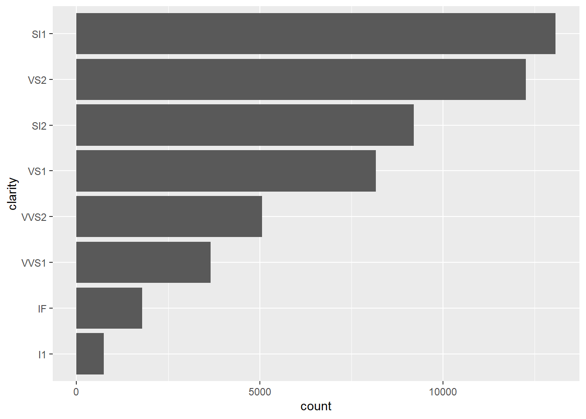

Code
| mean_var | group_var | group | x | y |
|---|---|---|---|---|
| 1 | g | 1 | 10 | 100 |
| 2 | h | 1 | 100 | 200 |
Code
grouped_mean(df,group, x)| group | mean |
|---|---|
| 1 | 55 |
| mean_var | group_var | group | x | y |
|---|---|---|---|---|
| 1 | g | 1 | 10 | 100 |
| 2 | h | 1 | 100 | 200 |
grouped_mean(df,group, x)| group | mean |
|---|---|
| 1 | 55 |
{{}}
Data-masking: arrange()filter()summarize() compute with variables
Tidy-selection：select()relocate()rename() select variables
#
summary6 <- function(data, var) {
data |> summarize(
min = min({{ var }}, na.rm = TRUE),
mean = mean({{ var }}, na.rm = TRUE),
median = median({{ var }}, na.rm = TRUE),
max = max({{ var }}, na.rm = TRUE),
n = n(),
n_miss = sum(is.na({{ var }})),
.groups = "drop"
)
}
diamonds |>
group_by(cut) |>
summary6(carat)| cut | min | mean | median | max | n | n_miss |
|---|---|---|---|---|---|---|
| Fair | 0.22 | 1.0461366 | 1.00 | 5.01 | 1610 | 0 |
| Good | 0.23 | 0.8491847 | 0.82 | 3.01 | 4906 | 0 |
| Very Good | 0.20 | 0.8063814 | 0.71 | 4.00 | 12082 | 0 |
| Premium | 0.20 | 0.8919549 | 0.86 | 4.01 | 13791 | 0 |
| Ideal | 0.20 | 0.7028370 | 0.54 | 3.50 | 21551 | 0 |
| clarity | n | prop |
|---|---|---|
| I1 | 741 | 0.0137375 |
| SI2 | 9194 | 0.1704486 |
| SI1 | 13065 | 0.2422136 |
| VS2 | 12258 | 0.2272525 |
| VS1 | 8171 | 0.1514831 |
| VVS2 | 5066 | 0.0939192 |
| VVS1 | 3655 | 0.0677605 |
| IF | 1790 | 0.0331850 |
#
unique_where <- function(df, condition, var) {
df |>
dplyr::filter({{ condition }}) |>
distinct({{ var }}) |>
arrange({{ var }})
}
mtcars|> unique_where(cyl==4, mpg)| mpg | |
|---|---|
| Volvo 142E | 21.4 |
| Toyota Corona | 21.5 |
| Datsun 710 | 22.8 |
| Merc 240D | 24.4 |
| Porsche 914-2 | 26.0 |
| Fiat X1-9 | 27.3 |
| Honda Civic | 30.4 |
| Fiat 128 | 32.4 |
| Toyota Corolla | 33.9 |
# Data-masking vs. tidy-selection
count_missing <- function(df, group_vars, x_var) {
df |>
group_by({{ group_vars }}) |> #select variables inside a function that uses data-masking
summarize(
n_miss = sum(is.na({{ x_var }})),
.groups = "drop"
)
}
mtcars|>
count_missing(c(cyl,am), mpg)
#> Error in `group_by()`:
#> ℹ In argument: `c(cyl, am)`.
#> Caused by error:
#> ! `c(cyl, am)` must be size 32 or 1, not 64.
count_missing <- function(df, group_vars, x_var) {
df |> #pick()
group_by(pick({{ group_vars }})) |> #use tidy-selection inside data-masking functions
summarize(
n_miss = sum(is.na({{ x_var }})),
.groups = "drop"
)
}
mtcars|>
count_missing(c(cyl,am), mpg)| cyl | am | n_miss |
|---|---|---|
| 4 | 0 | 0 |
| 4 | 1 | 0 |
| 6 | 0 | 0 |
| 6 | 1 | 0 |
| 8 | 0 | 0 |
| 8 | 1 | 0 |
histogram <- function(df, var, binwidth = NULL) {
df |>
ggplot(aes(x = {{ var }})) +
geom_histogram(binwidth = binwidth)
}
diamonds |> histogram(carat, 0.1)
sorted_bars <- function(df, var) {
df |> # walrus operator :=
mutate({{ var }} := fct_rev(fct_infreq({{ var }}))) |>
ggplot(aes(y = {{ var }})) +
geom_bar()
}
diamonds |> sorted_bars(clarity)
:::{#quarto-navigation-envelope .hidden}
[R data science]{.hidden render-id="quarto-int-sidebar-title"}
[R data science]{.hidden render-id="quarto-int-navbar-title"}
[<span class='chapter-number'>5</span> <span class='chapter-title'>基本数据处理</span>]{.hidden render-id="quarto-int-prev"}
[参考资料]{.hidden render-id="quarto-int-sidebar:/index.html参考资料"}
[Programming]{.hidden render-id="quarto-int-sidebar:quarto-sidebar-section-1"}
[<span class='chapter-number'>1</span> <span class='chapter-title'>数据类型和数据结构</span>]{.hidden render-id="quarto-int-sidebar:/basic_data_type_class.html<span-class='chapter-number'>1</span>--<span-class='chapter-title'>数据类型和数据结构</span>"}
[<span class='chapter-number'>2</span> <span class='chapter-title'>函数</span>]{.hidden render-id="quarto-int-sidebar:/function.html<span-class='chapter-number'>2</span>--<span-class='chapter-title'>函数</span>"}
[<span class='chapter-number'>3</span> <span class='chapter-title'>高效</span>]{.hidden render-id="quarto-int-sidebar:/efficient.html<span-class='chapter-number'>3</span>--<span-class='chapter-title'>高效</span>"}
[Data science]{.hidden render-id="quarto-int-sidebar:quarto-sidebar-section-2"}
[<span class='chapter-number'>4</span> <span class='chapter-title'>读入和写出</span>]{.hidden render-id="quarto-int-sidebar:/I-O.html<span-class='chapter-number'>4</span>--<span-class='chapter-title'>读入和写出</span>"}
[<span class='chapter-number'>5</span> <span class='chapter-title'>基本数据处理</span>]{.hidden render-id="quarto-int-sidebar:/base_data_processing.html<span-class='chapter-number'>5</span>--<span-class='chapter-title'>基本数据处理</span>"}
[<span class='chapter-number'>6</span> <span class='chapter-title'>函数式编程</span>]{.hidden render-id="quarto-int-sidebar:/functional_programming.html<span-class='chapter-number'>6</span>--<span-class='chapter-title'>函数式编程</span>"}
[Data science]{.hidden render-id="quarto-breadcrumbs-Data-science"}
[<span class='chapter-number'>6</span> <span class='chapter-title'>函数式编程</span>]{.hidden render-id="quarto-breadcrumbs-<span-class='chapter-number'>6</span>--<span-class='chapter-title'>函数式编程</span>"}
:::
:::{#quarto-meta-markdown .hidden}
[R data science - [6]{.chapter-number} [函数式编程]{.chapter-title}]{.hidden render-id="quarto-metatitle"}
[R data science - [6]{.chapter-number} [函数式编程]{.chapter-title}]{.hidden render-id="quarto-twittercardtitle"}
[R data science - [6]{.chapter-number} [函数式编程]{.chapter-title}]{.hidden render-id="quarto-ogcardtitle"}
[R data science]{.hidden render-id="quarto-metasitename"}
[]{.hidden render-id="quarto-twittercarddesc"}
[]{.hidden render-id="quarto-ogcardddesc"}
:::
<!-- -->
::: {.quarto-embedded-source-code}
```````````````````{.markdown shortcodes="false"}
# 函数式编程
## 向量式函数
## 数据框式函数
quarto-executable-code-5450563D
```r
grouped_mean <- function(df, group_var, mean_var) {
df |>
group_by({{ group_var }}) |> #embracing拥抱 {{}}
summarize(mean=mean({{ mean_var }}))
#拥抱变量会告诉 dplyr使用存储在参数中的值，而不是将参数作为文本变量名称
}
df <- tibble(
mean_var = c(1,2),
group_var = c("g","h"),
group = c(1,1),
x = c(10,100),
y = c(100,200)
)
df
grouped_mean(df,group, x){{}}
Data-masking: arrange()filter()summarize() compute with variables
Tidy-selection：select()relocate()rename() select variables
quarto-executable-code-5450563D
#
summary6 <- function(data, var) {
data |> summarize(
min = min({{ var }}, na.rm = TRUE),
mean = mean({{ var }}, na.rm = TRUE),
median = median({{ var }}, na.rm = TRUE),
max = max({{ var }}, na.rm = TRUE),
n = n(),
n_miss = sum(is.na({{ var }})),
.groups = "drop"
)
}
diamonds |>
group_by(cut) |>
summary6(carat)
#
count_prop <- function(df, var, sort = FALSE) {
df |>
dplyr::count({{ var }}, sort = sort) |>
mutate(prop = n / sum(n))
}
diamonds |> count_prop(clarity)
#
unique_where <- function(df, condition, var) {
df |>
dplyr::filter({{ condition }}) |>
distinct({{ var }}) |>
arrange({{ var }})
}
mtcars|> unique_where(cyl==4, mpg)
# Data-masking vs. tidy-selection
count_missing <- function(df, group_vars, x_var) {
df |>
group_by({{ group_vars }}) |> #select variables inside a function that uses data-masking
summarize(
n_miss = sum(is.na({{ x_var }})),
.groups = "drop"
)
}
mtcars|>
count_missing(c(cyl,am), mpg)
count_missing <- function(df, group_vars, x_var) {
df |> #pick()
group_by(pick({{ group_vars }})) |> #use tidy-selection inside data-masking functions
summarize(
n_miss = sum(is.na({{ x_var }})),
.groups = "drop"
)
}
mtcars|>
count_missing(c(cyl,am), mpg)quarto-executable-code-5450563D
histogram <- function(df, var, binwidth = NULL) {
df |>
ggplot(aes(x = {{ var }})) +
geom_histogram(binwidth = binwidth)
}
diamonds |> histogram(carat, 0.1)
sorted_bars <- function(df, var) {
df |> # walrus operator :=
mutate({{ var }} := fct_rev(fct_infreq({{ var }}))) |>
ggplot(aes(y = {{ var }})) +
geom_bar()
}
diamonds |> sorted_bars(clarity):::